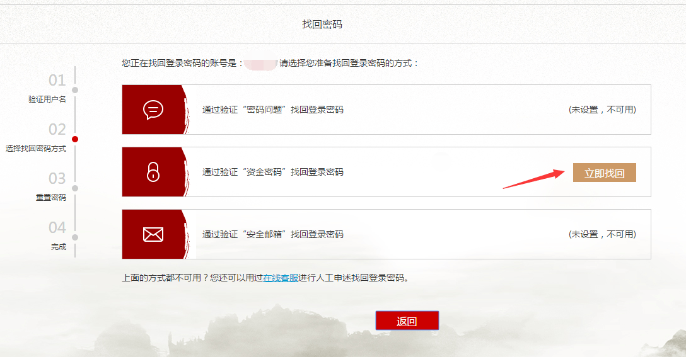

1、在登陆界面找到“忘记密码？”标识，点击进去
2、输入您的账号和验证码，点击“下一步”
3、您可以通过密码问题、资金密码和安全邮箱找回登录密码
例如通过资金密码找回，您可以点击“立即找回”，然后输入资金密码，点击“下一步”

4、设置您的新登录密码，点击“确认”，则重置登陆密码成功。您可以开始使用您的新密码登陆平台了。
1、将鼠标移动到您的账户名，会自动下拉出一列子菜单，找到“个人中心”，点击进去
2、在“账户安全”栏位下选择“资金密码”-“修改”，然后输入您当前的资金密码，再输入新密码，点击保存。则修改资金密码成功。
3、在“密码管理”页面，选择“找回资金密码”，再选择资金密码的找回方式：通过密保问题找回或者通过银行卡信息找回。
4、如果您选择通过密保问题找回资金密码，请填写好您的密保答案，点击“验证”
5、如果您选择通过银行卡信息找回资金密码，请填写好银行卡的开户人姓名、银行卡号，点击“验证”
6、如果以上信息验证成功，则您可以在跳转的新页面里输入新的资金密码，点击“修改”，则新的资金密码设置成功。
为了保障用户的账户安全，平台推出了密保问题验证功能。您在选择好安全问题后，设置对应的答案即可，。同时密保信息是找回登录密码和资金密码的安全凭证，请您妥善保存，切勿告诉他人。 如果您忘记了密保答案，请您仔细回忆在平台绑定的相关资料，假如实在无法想起，可以联系在线客服进行申诉。